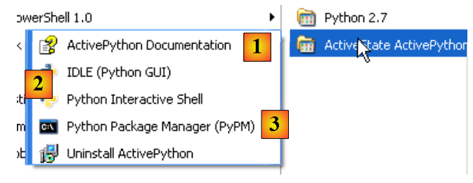
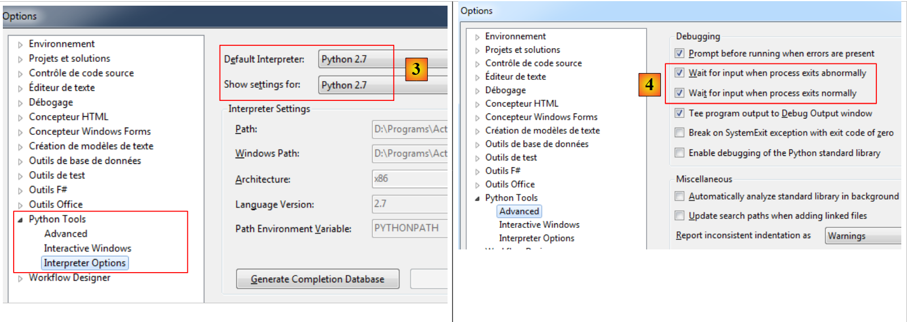

2. Instalação de um interpretador Python
2.1. ActivePython
Os exemplos neste documento foram testados com o interpretador Python da ActiveState:
 |
Notas:
- Não descarregue a versão de 64 bits do ActivePython. Esta não permite a instalação do módulo MySQLdb, que será necessário mais adiante neste documento.
A instalação do ActivePython cria a seguinte estrutura de diretórios:
 |
e o seguinte menu na pasta Aplicações:
 |
- 1: a documentação do ActivePython. Esta é muito completa e é uma boa ideia consultá-la sempre que se deparar com um problema;
- 2: um interpretador Python interativo;
- 3: o gestor de pacotes do ActivePython. Iremos utilizá-lo para instalar o pacote Python que nos permite trabalhar com bases de dados MySQL.
Não iremos utilizar o interpretador Python interativo. Deve apenas ter em conta que os scripts neste documento podem ser executados utilizando este interpretador. Embora seja útil para testar o funcionamento de uma funcionalidade do Python, não é muito prático para scripts que precisam de ser reutilizados. Aqui está um exemplo:
 |
O prompt >>> permite-lhe introduzir uma instrução Python que é executada imediatamente. O código digitado acima significa o seguinte:
Linhas:
- 1: Inicialização de uma variável. Em Python, não se declara o tipo das variáveis. Estas assumem automaticamente o tipo do valor que lhes é atribuído. Este tipo pode mudar ao longo do tempo;
- 2: exibição do nome. «name=%s» é um formato de exibição em que %s é um parâmetro formal que denota uma cadeia de caracteres. (name) é o parâmetro real que será exibido no lugar de %s;
- 3: o resultado da exibição;
- 4: exibição do tipo da variável name;
- 5: a variável name é do tipo str (cadeia de caracteres).
Abaixo, fornecemos scripts que foram testados da seguinte forma:
- o script pode ser escrito utilizando qualquer editor de texto. Aqui utilizámos o Notepad++, que oferece realce de sintaxe para scripts Python;
- o script é executado numa janela do DOS.
 |
- Navegue até à pasta que contém o script a ser testado;
- A variável %python% é uma variável do sistema:
- Linha 1: exibe o valor da variável de ambiente %python%;
- Linha 2: o seu valor: <installdir>\python.exe, onde installdir é a pasta de instalação do ActivePython.
2.2. Ferramentas Python para o Visual Studio
[Ferramentas Python para o Visual Studio] está disponível (fevereiro de 2012) no seguinte URL: [http://pytools.codeplex.com/]. A sua execução adiciona funcionalidades Python ao Visual Studio 2010. A versão Express do Visual Studio 2010 é gratuita e está disponível em [http://www.microsoft.com/visualstudio/en-us/products/2010-editions/express].
Depois de instaladas as extensões [Ferramentas Python para o Visual Studio], pode criar projetos Python com o VS 2010:
 |
- para todos os exemplos neste documento, a opção [1] é a adequada;
- [2]: O menu (Ferramentas / Opções) permite-lhe configurar o ambiente Python.
O interpretador ActivePython deve ter sido detetado pelo Visual Studio [3]:
 |
- em [4], especificamos que a execução do programa deve ser pausada até que o utilizador pressione uma tecla no teclado.
Vamos criar um projeto Python (Arquivo / Novo / Projeto):
 |
- em [1,2]: selecione um projeto Python do tipo [Aplicação Python];
- em [3]: escolha uma pasta para o projeto;
- em [4]: atribua um nome ao projeto;
- em [5]: o projeto gerado.
O ficheiro [essai_02.py] é um programa Python:
print('Hello World')
Execute-o premindo [Ctrl-F5]: o resultado aparece numa janela do DOS [6]. Todo o código neste documento também foi testado desta forma. Os exemplos são fornecidos como uma solução do VS 2010:
 |